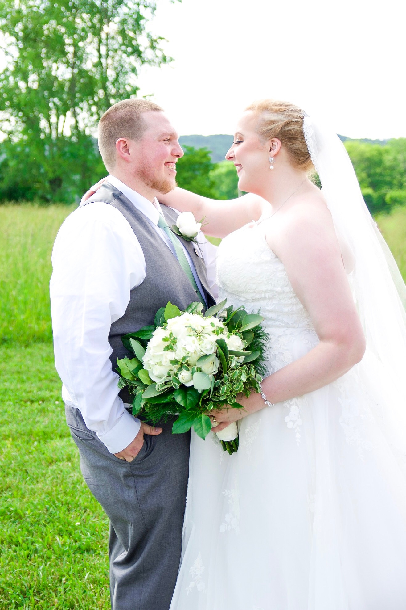
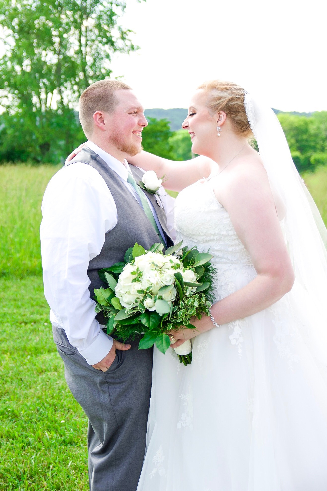

About Me
My name is Cassandra Howard, but I go by Cassie. I have been married to my husband, Jay, for almost three years. Our third anniversary is in June. We have a two year old Golden Retriever, Winston, who is our spoiled fur baby. In my spare time, I love to read, bake, sew, and travel.
 

Personal Book Recommendations
| Title | Author | Description |
|---|---|---|
| "Remarkably Bright Creatures" | Shelby Van Pelt | "Remarkably Bright Creatures" is one of my favorite books. This book is a light-hearted fiction novel. The main character, Tova, finds herself befriending an unruly octopus in the aquarium where she works. Together, they solve the mystery of Tova's son's disappearance. This novel had me laughing out loud and crying because I did not want it to end. |
| "In My Dreams I Hold a Knife" | Ashley Winstead | This book is a fictional thriller. The main character, Jessica, attends a reunion at her college ten years after her graduation. One of Jessica's friends was killed before graduation. Jessica, along with her other friends, has been keeping secrets. |
| "Book Lovers" | Emily Henry | This book is a romantic fiction novel. A literary agent and an editor end up in the same small town. Will they stay enemies after they spend time together? |
| "The Nightingale" | Kristin Hannah | This book is a historic fiction novel. I normally do not enjoy historic novels, but this novel is the exception. This novel follows two sisters during World War II and the sacrifices they are forced to make. This is a beautiful novel and I wanted to re-read it as soon as I finished it. |